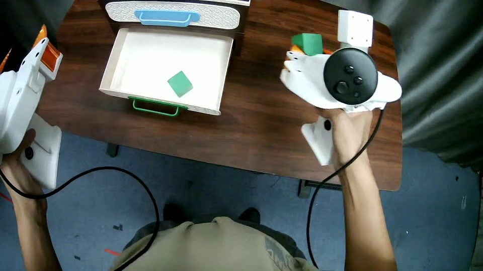
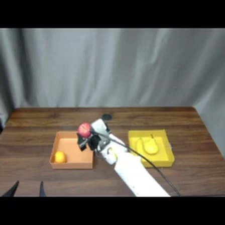
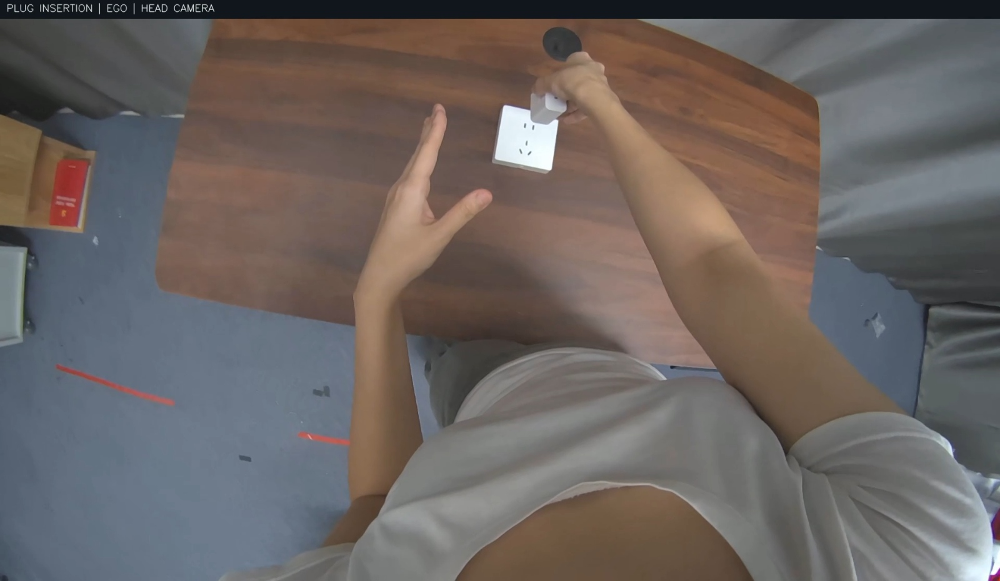
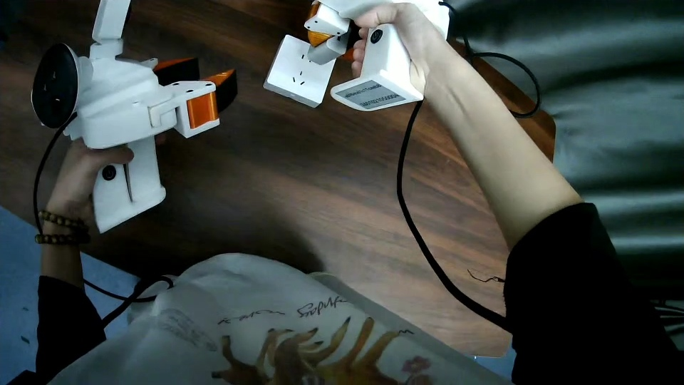

Heterogeneous Demonstration Learning for Generalizable Robot Manipulation
LoCo-H2R-VLALow-Cost Human-to-Robot Transfer for Data-Efficient VLA Post-Training
LoCo-H2R-VLA is designed to combine low-cost human demonstrations, including egocentric (Ego) videos and handheld UMI demonstrations, with limited target-robot teleoperation to reduce the need for expensive robot data and improve policy generalization.
Using 100 UMI demonstrations to learn manipulation skills and 50 robot demonstrations for policy post-training, we measured 60% success on desk tidying and 80% on fruit sorting. Ego videos have been prepared for the next stage of research.
Tsinghua University · Research Intern · Aug.–Nov. 2026
Collecting a demonstration by teleoperation ties up both the robot and its operator. A person can show how to grasp, move and place objects using handheld grippers. Which parts of that experience help a humanoid robot learn the same task with fewer demonstrations on its own hardware?
Method Principles
How can human demonstrations reduce robot data requirements?
Current validation uses UMI and Robot demonstrations through staged knowledge transfer. Ego data preparation is complete; Ego is a future integration direction.
Visual features also reach the FDM through a current-observation bypass. A separate motion head uses the quantized code vectors. Both reconstruction objectives train the IDM through the FSQ straight-through path.
Autoregression is between code slots. Exported Teacher labels supervise two-slot NLL during UMI training; the distribution expectation is used for subsequent policy conditioning.
Current robot images enter two independent visual paths. The prior is detached before the adapter, and its 2048D residual is added only to valid visual tokens. Native state and the task prompt condition the policy through the existing prefix path.
In desk tidying, the humanoid robot rearranges objects on a work surface. In fruit sorting, it picks and places fruit. Each recording shows the learned policy running on the robot.
Fruit Sorting · Pick-and-Place ManipulationReal-robot success rate: 80% (16/20 trials)
Experimental Evaluation
With 50 robot demonstrations, LoCo-H2R-VLA reached 60% on desk tidying and 80% on fruit sorting. The robot-only policy trained on the same number of robot demonstrations reached 25% and 50%, respectively.
Configuration
Robot
UMI
Desk tidying
Fruit sorting
LoCo-H2R-VLA
50
100
60% (12/20)
80% (16/20)
Robot-only R50
50
0
25% (5/20)
50% (10/20)
Robot-only R100
100
0
35% (7/20)
70% (14/20)
IK-mapped
50
100
10% (2/20)
20% (4/20)
Robot and UMI columns count training demonstrations. Each configuration was tested on the robot 20 times for desk tidying and 20 times for fruit sorting.
Data Collection & Training
I coordinated the collection of egocentric videos, UMI demonstrations, and robot teleoperation data across three tasks spanning long-horizon manipulation, pick-and-place, and precision alignment.
I standardized demonstrations into 20 Hz LeRobot datasets and trained ACT and π0.5 baselines.
Desk Tidying · Long-Horizon Manipulation
Ego · first-person

UMI
Robot · teleoperation
Fruit Sorting · Pick-and-Place Manipulation
Ego · first-person
UMI

Robot · teleoperation
Plug Insertion · Precision Alignment and Insertion

Ego · first-person

UMI
Robot · teleoperation
System Implementation
On the humanoid robot, I integrated multi-view cameras and proprioception with a 20 Hz ROS 2 control loop. Execution logs align commands with feedback so I can trace a failed grasp or placement.
My Contributions
As a Research Intern at the Institute of Information Cognition and Intelligent Systems, Department of Electronic Engineering, Tsinghua University, I was the primary technical contributor to LoCo-H2R-VLA. I designed and implemented the learning approach and the controlled experiments.
I built the data pipeline and coordinated a collection team across three tasks, from recruiting operators and assigning tasks to preparing demonstrations for training.
I trained the baselines, deployed the policies and built logging tools to compare commanded and observed robot motion during evaluation.